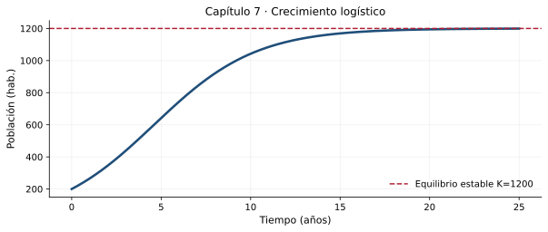

Un proceso de modelación riguroso puede seguir cinco etapas: definir el sistema físico; establecer variables, parámetros y unidades; plantear balances o leyes constitutivas; resolver e interpretar; y validar con datos o supuestos. El modelo debe registrar su rango de aplicación y las fuentes de incertidumbre.
Para el trabajo de investigación formativa del sílabo, documentar estas etapas permite distinguir un cálculo matemático de una decisión de ingeniería debidamente fundamentada.
Compruebe la idea principal: identifique las condiciones bajo las cuales el procedimiento explicado es válido.
7.2. Modelos de población y equilibrio
En \(P\prime=rP(1-P/K)\), \(P\) y \(K\) están en individuos y \(r\) en tiempo\(^{-1}\). Los equilibrios son \(P=0\) y \(P=K\). Para \(r>0\), valores positivos próximos a \(K\) se aproximan a \(K\), por lo que representa un equilibrio estable.
\[P(t)=\frac{K}{1+\left(K/P_0-1\right)e^{-rt}}\]
La ley logística es ilustrativa; una población urbana real puede tener migración, restricciones de infraestructura y tasas variables que invaliden el modelo.
Compruebe la idea principal: identifique las condiciones bajo las cuales el procedimiento explicado es válido.
7.3. Movimiento con resistencia proporcional a la velocidad
Para un cuerpo de masa \(m\) y eje positivo hacia abajo, la segunda ley de Newton con resistencia lineal \(cv\) produce
La velocidad terminal es \(v_\infty=mg/c\) si \(c>0\). La constante de tiempo \(\tau=m/c\) mide el ritmo del transitorio; \(c\) tiene dimensiones de masa/tiempo. El supuesto de resistencia lineal es válido solo en regímenes específicos.
Compruebe la idea principal: identifique las condiciones bajo las cuales el procedimiento explicado es válido.
7.4. Almacenamiento con entrada y descarga
Para un tanque con aporte constante \(I\) y descarga proporcional al almacenamiento, puede emplearse \(S\prime=I-kS\):
La capacidad de retención real, el vertido, la evaporación, el caudal saliente y la geometría pueden exigir modelos más completos. El balance ideal muestra con claridad el significado de equilibrio y la sensibilidad a \(I\) y \(k\).
Compruebe la idea principal: identifique las condiciones bajo las cuales el procedimiento explicado es válido.
7.5. Verificación y reporte de resultados
Toda simulación debe comunicar valores de entrada, unidades, ecuación usada, criterio para seleccionar parámetros, método numérico, una comprobación analítica cuando exista y conclusiones. Para un caso aplicado a Ingeniería Civil se recomienda al menos una tabla de parámetros, dos gráficos comparativos, un análisis de sensibilidad y una sección de limitaciones.
Ninguno de estos ejemplos debe interpretarse como dimensionamiento estructural, hidráulico ni de seguridad vial.
Compruebe la idea principal: identifique las condiciones bajo las cuales el procedimiento explicado es válido.
Tres problemas resueltos paso a paso
Ejemplo 1. Población logística
Un modelo didáctico usa \(r=0.35\,\mathrm{año^{-1}}\), \(K=1200\), \(P_0=200\). Determine el tiempo para llegar a \(P=600\).
Calcule \(K/P_0-1=5\). Por ello \(P(t)=1200/(1+5e^{-0.35t})\).
Imponer \(P=600\): \(1+5e^{-0.35t}=2\), así que \(e^{-0.35t}=1/5\).
Aplicar logaritmo: \(t=\ln5/0.35\approx4.598\) años.
Comprobación y criterio: \(P(0)=1200/6=200\); la derivada coincide con la ley logística.
Ejemplo 2. Velocidad terminal
Un cuerpo idealizado de masa \(m=80\,\mathrm{kg}\), resistencia \(c=25\,\mathrm{kg/s}\), \(v(0)=0\), cae con eje positivo hacia abajo y \(g=9.81\,\mathrm{m/s^2}\). Determine \(v_\infty\) y el tiempo para llegar al 95 %.
Balance de fuerzas: \(80v\prime=80(9.81)-25v\).
La velocidad terminal es \(v_\infty=80(9.81)/25=31.392\,\mathrm{m/s}\).
Con reposo inicial, \(v(t)=v_\infty(1-e^{-25t/80})\). Para \(v=0.95v_\infty\): \(e^{-25t/80}=0.05\).
Comprobación y criterio: En \(t=0\), \(v=0\) y al derivar se comprueba \(v\prime=9.81-(25/80)v\).
Ejemplo 3. Equilibrio de almacenamiento
Una reserva idealizada cumple \(S\prime=2-0.1S\), \(S(0)=5\) unidades de volumen y \(t\) en horas. Determine \(S(t)\) y \(S(10)\).
El equilibrio cumple \(2-0.1S_*=0\), por tanto \(S_*=20\).
La solución general es \(S=20+Ce^{-0.1t}\).
Con \(S(0)=5\), \(C=-15\). Calcule \(S(10)=20-15e^{-1}\approx14.482\).
Resultado
\[S(t)=20-15e^{-0.1t},\qquad S(10)\approx14.482\]
Comprobación y criterio: \(S\prime=1.5e^{-0.1t}\) y \(2-0.1(20-15e^{-0.1t})=1.5e^{-0.1t}\).
Laboratorio de MATLAB
El archivo del capítulo contiene experimentos reproducibles y parámetros modificables, organizados en secciones %%. Puede abrirlo en el Editor, ejecutarlo por partes y convertirlo en Live Script de acuerdo con la versión instalada de MATLAB.

Representación inicial de referencia. Los scripts amplían el análisis con nuevas simulaciones.
Requisito: MATLAB con funciones básicas y ode45. No se necesita Symbolic Math Toolbox para las actividades incluidas.
Resuelva con razonamiento matemático, verifique por sustitución cuando sea posible y discuta dimensiones, dominio o interpretación de los resultados. Se incluyen pistas y respuestas de algunos ejercicios más adelante.
Nivel I · Conceptos y reconocimiento
Escriba las unidades de \(r\) y \(K\) en el modelo logístico.
Determine los equilibrios de \(P\prime=0.4P(1-P/800)\).
Clasifique la estabilidad de los equilibrios anteriores para \(P\ge0\).
Calcule \(P(t)\) con \(r=0.2\), \(K=1000\), \(P(0)=100\).
Nivel II · Procedimientos y verificación
Calcule el tiempo necesario para alcanzar 500 habitantes en el ejercicio anterior.
Obtenga \(v_\infty\) para \(m=60\,\mathrm{kg}\), \(c=20\,\mathrm{kg/s}\) y \(g=9.81\,\mathrm{m/s^2}\).
Compare la evolución de \(v(t)\) para \(c=10,20,40\,\mathrm{kg/s}\), masa fija.
Discuta el significado físico de \(\tau=m/c\) y sus dimensiones.
Resuelva \(S\prime=5-0.2S\), con \(S(0)=10\).
Nivel III · Aplicaciones e interpretación
Determine el equilibrio del sistema del ejercicio anterior.
Calcule \(S(5)\) para el ejercicio anterior.
Plantee el balance \(dS/dt=Q_e-Q_s\), especificando unidades SI.
Diseñe una tabla de parámetros para comparar dos escenarios de entrada de agua en un tanque.
Explique dos razones por las que un modelo didáctico de caída con fricción lineal no describe todas las condiciones reales.
Trabajo de aplicación
4 actividades al finalizar el tema
A1 · Informe de campo
Elija un fenómeno cuantificable de ingeniería civil, proponga una EDO de primer orden y documente supuestos, variables y condiciones.
Evidencia mínima: procedimiento razonado, resultados con unidades cuando correspondan, una verificación y conclusión propia.
A2 · MATLAB: comparaciones
Simule población logística, caída con resistencia y almacenamiento lineal; superponga fórmula y ode45.
Evidencia mínima: procedimiento razonado, resultados con unidades cuando correspondan, una verificación y conclusión propia.
A3 · Estudio de sensibilidad
Varíe tres parámetros relevantes de un modelo y describa impactos sobre el equilibrio y el tiempo transitorio.
Evidencia mínima: procedimiento razonado, resultados con unidades cuando correspondan, una verificación y conclusión propia.
A4 · Investigación formativa
Prepare un anteproyecto que incluya problema, objetivo, marco matemático, escenario de aplicación, método de validación y referencias, para articularlo con el trabajo de 10 puntos del sílabo.
Evidencia mínima: procedimiento razonado, resultados con unidades cuando correspondan, una verificación y conclusión propia.
Orientación de valoración, no asignación oficial
Para una actividad docente de práctica sobre 5 puntos se sugiere: planteamiento 1 p.; procedimiento 1.5 p.; verificación/uso de MATLAB 1 p.; interpretación 1 p.; presentación y unidades 0.5 p. El docente decidirá qué actividades se califican según el sílabo vigente.
Autoevaluación conceptual
Abra cada pregunta para comprobar su interpretación. Estas preguntas son de práctica y no constituyen una evaluación en línea.
¿Cómo se encuentra un equilibrio?
Igualando a cero la tasa de cambio de la variable.
¿Qué es la velocidad terminal?
El límite de la velocidad cuando el tiempo crece bajo el modelo con resistencia.
¿Qué debe contener una simulación reproducible?
Ecuación, parámetros, unidades, condición inicial, código, gráficos y verificación.
Respuestas seleccionadas de los ejercicios
Contraste solo después de intentar resolver. Una expresión correcta requiere también procedimiento, intervalo de validez e interpretación cuando correspondan.
2: \(P=0\) y \(P=800\).
4: \(P=1000/(1+9e^{-0.2t})\).
5: \(t=\ln9/0.2\approx10.986\) años.
6: \(v_\infty=29.43\) m/s.
9: \(S(t)=25-15e^{-0.2t}\).
10: \(S_*=25\).
11: \(S(5)=25-15e^{-1}\approx19.482\).
Lectura complementaria y observaciones
El capítulo integra los contenidos 1.7.1 a 1.7.3 del sílabo y orienta el proyecto de investigación formativa.
Referencia bibliográfica: Calderón, G., Arango, J. y Gómez, A. (2023), Ecuaciones diferenciales para estudiantes de ciencias e ingenierías, Universidad del Valle; Zill, D. G. (2015), Ecuaciones diferenciales con aplicaciones de modelado. Los textos, ejercicios y gráficos de esta página son producciones nuevas y no reproducen el contenido editorial suministrado.